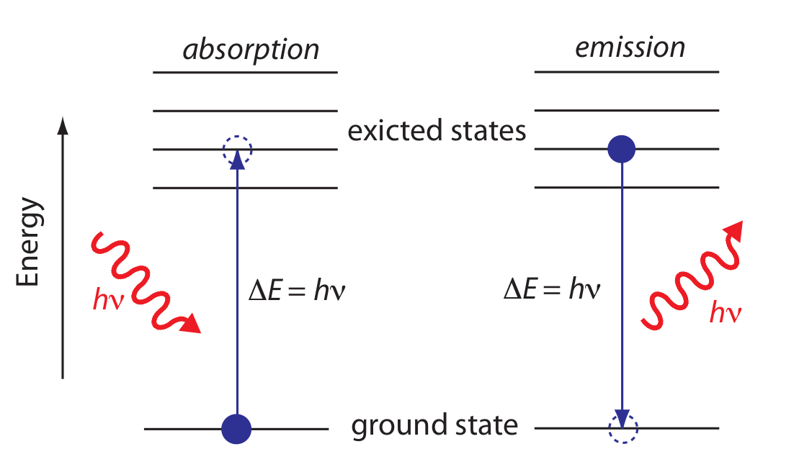
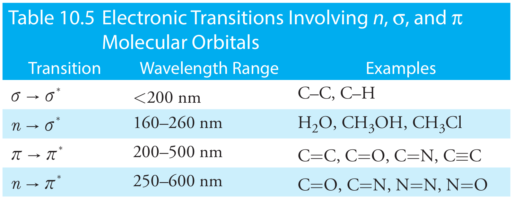
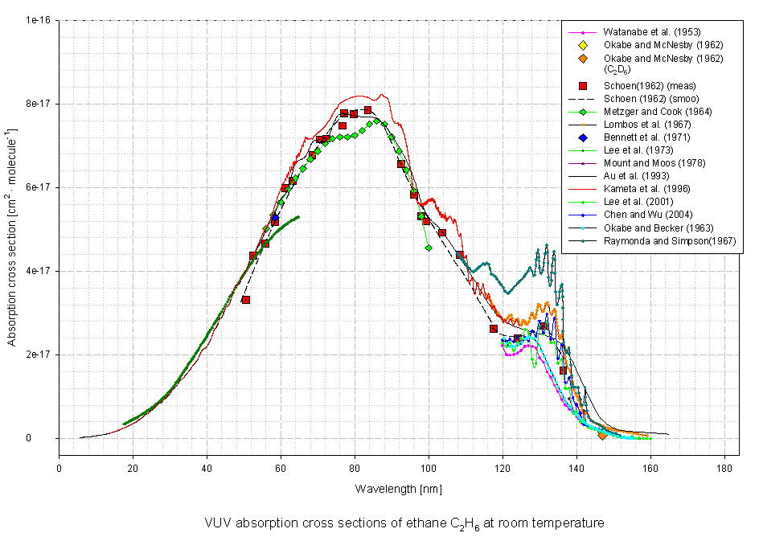

layout: true .footer[ - <div class="tooltip"><a href="/"><i class="fas fa-home"></i></a> <span class="tooltiptext">Go to C370 Main Page</span></div> - <div class="tooltip"><a href="/lecture/slides"><i class="fas fa-chalkboard-teacher"></i></a><span class="tooltiptext">Go to Lecture List</span></div> - <div class="tooltip"><i class="fas fa-question"></i><span class="tooltiptext">Press <kbd>Shift</Kbd> + <kbd>?</kbd> for Navigation Tips!</span></div> ] --- class: center <!-- ========================= Title Slide ============================= --> <div style="margin-top: 100px;"></div> <h1 style = "text-align: left; font-weight: bold; margin-left: 175px;">Week 8: Spectroscopy Theory</h1> <h5 style = "text-align: left; font-weight: bold; margin-left: 175px;">Harvey Ch 10</h5>  .image-credit[David Harvey / [Analytical Chemistry 2.1](https://chem.libretexts.org/Bookshelves/Analytical_Chemistry/Book%3A_Analytical_Chemistry_2.1_%28Harvey%29) / [CC BY-SA 4.0](https://creativecommons.org/licenses/by-sa/3.0/at/deed.en)] --- # Types of Spectroscopy .image-credit[David Harvey / [Analytical Chemistry 2.1](https://chem.libretexts.org/Bookshelves/Analytical_Chemistry/Book%3A_Analytical_Chemistry_2.1_%28Harvey%29) / [CC BY-SA 4.0](https://creativecommons.org/licenses/by-sa/3.0/at/deed.en)] *We could also divide these into **vibrational** and **electronic** spectroscopy.* --- # Why do Chemicals Absorb (UV-visible) Light? Short answer: 1. There must be a mechanism by which the analyte interacts with the magnetic or electric field of the radiation (valence electrons). 1. Energy of absorbed photon ($E$) must exactly equal the difference in energy between two of the analyte’s quantized energy states ($\Delta E$). Here are the **selection rules**: 1. *Energy selection rule:* Energy of absorbed photon must match the difference in energy between quantized states of atom or molecule. 2. *Spin selection rule:* Electronic transition cannot change the net spin multiplicity of the molecule. (i.e. forbidden if there is a change in paired/unpaired electons) 3. *LaPorte selection rule:* Transitions between orbitals of the same symmetry (parity) are forbidden. 4. *Frank-Condon rule:* Symmetry of ground state and excited state must overlap. --- # Transitions that Lead to Absorption <img src="img/chapter-10/energy-levels-uv-vis-ir.png" style = "margin-left: auto; margin-right: auto; display: block; height: 400px;"> .image-credit[David Harvey / [Analytical Chemistry 2.1](https://chem.libretexts.org/Bookshelves/Analytical_Chemistry/Book%3A_Analytical_Chemistry_2.1_%28Harvey%29) / [CC BY-SA 4.0](https://creativecommons.org/licenses/by-sa/3.0/at/deed.en)] --- # UV-vis: Electronic Transitions  .image-credit[David Harvey / [Analytical Chemistry 2.1](https://chem.libretexts.org/Bookshelves/Analytical_Chemistry/Book%3A_Analytical_Chemistry_2.1_%28Harvey%29) / [CC BY-SA 4.0](https://creativecommons.org/licenses/by-sa/3.0/at/deed.en)] *IR spectroscopy involves vibrational and rotational energy states.* -- > **Chromophore:** A bond or functional group that gives rise to absorption. --- # UV-vis: Electronic Transitions <img src="https://www.chem.ucla.edu/~bacher/UV-vis/UV_vis_tetracyclone.jpg" style = "margin-left: auto; margin-right: auto; display: block;"> .image-credit[[chem.ucla.edu](https://www.chem.ucla.edu/~bacher/UV-vis/uv_vis_tetracyclone.html.html)] --- # UV-vis: Electronic Transitions <img src="https://www2.chemistry.msu.edu/faculty/reusch/virttxtjml/spectrpy/Images/electrns.gif" style = "margin-left: auto; margin-right: auto; display: block; margin-top: 100px;"> .image-credit[[chemistry.msu.edu](https://www2.chemistry.msu.edu/faculty/reusch/virttxtjml/spectrpy/uv-vis/spectrum.htm)] --- # Molecular Structure Lead to Color - As unsaturation increases, a molecule is more likely to absorb UV-vis radiation. (more $\pi \rightarrow \pi^{*}$ transitions) <img src="https://www2.chemistry.msu.edu/faculty/reusch/virttxtjml/spectrpy/Images/natpigm.gif" style = "margin-left: auto; margin-right: auto; display: block; height: 350px;"> .image-credit[[chemistry.msu.edu](https://www2.chemistry.msu.edu/faculty/reusch/virttxtjml/spectrpy/uv-vis/spectrum.htm)] --- # Molecular Structure Lead to Color - Lone pairs and and double bonds (from heteroatoms) act as chromophores. (more $n \rightarrow \pi^{\*}$ and $\pi \rightarrow \pi^{\*}$ transitions) <img src="https://www2.chemistry.msu.edu/faculty/reusch/virttxtjml/spectrpy/Images/natpigm.gif" style = "margin-left: auto; margin-right: auto; display: block; height: 350px;"> .image-credit[[chemistry.msu.edu](https://www2.chemistry.msu.edu/faculty/reusch/virttxtjml/spectrpy/uv-vis/spectrum.htm)] --- # Molecular Structure Lead to Color - As conjugation increases, absorption bands are red-shifted, called **bathochromic shift**. (bigger "box": $E\_n = \frac{h^2n^2}{8ma^2}$) <img src="https://www2.chemistry.msu.edu/faculty/reusch/virttxtjml/spectrpy/Images/polyarom.gif" style = "margin-left: auto; margin-right: auto; display: block;"> .image-credit[[chemistry.msu.edu](https://www2.chemistry.msu.edu/faculty/reusch/virttxtjml/spectrpy/uv-vis/spectrum.htm)] ??? h = Planck's constant n = + whole number for quantum state m = mass a = length of "box" --- # Molecular Structure Lead to Color - Although $\sigma$-bonds do absorb light, it is typically < 200nm and therefore not detectable in traditional UV-vis.  .image-credit[[Mainz Spectral Atlas](http://satellite.mpic.de/spectral_atlas/cross_sections/Alkanes+alkyl%20radicals/Alkanes/C2H6.spc)] --- # Vibronic Transitions Molecular UV-vis actually measures superimposed electronic and vibrational (vibronic) transitions. Thus the broad features. <img src="https://webbook.nist.gov/cgi/inchi?Spec=C486259&Index=0&Type=UVVis&Large=on&SVG=on" style = "margin-left: auto; margin-right: auto; display: block; height: 375px;"> .image-credit[[NIST Chemistry WebBook](https://webbook.nist.gov/cgi/inchi?ID=C486259&Mask=400#UV-Vis-Spec)] --- # Vibronic Transitions Molecular UV-vis actually measures superimposed electronic and vibrational (vibronic) transitions. Thus the broad features. <img src="img/chapter-10/energy-levels-uv-vis-ir.png" style = "margin-left: auto; margin-right: auto; display: block; height: 400px;"> .image-credit[David Harvey / [Analytical Chemistry 2.1](https://chem.libretexts.org/Bookshelves/Analytical_Chemistry/Book%3A_Analytical_Chemistry_2.1_%28Harvey%29) / [CC BY-SA 4.0](https://creativecommons.org/licenses/by-sa/3.0/at/deed.en)] --- # IR: Vibrational Spectroscopy - Remember that molecules are constantly stretching, bending, twisting, rocking, scissoring, wagging - This occurs at a defined (quantized) frequency (energy). <center> <iframe width="800" height="600" src="https://en.wikipedia.org/wiki/Infrared_spectroscopy#Number_of_vibrational_modes" frameborder="0"></iframe> </center> ??? [Nice GIF on Wikipedia](https://en.wikipedia.org/wiki/Infrared_spectroscopy#Number_of_vibrational_modes) --- class: img-right # IR: Vibrational Spectroscopy <img src="img/chapter-10/energy-levels-uv-vis-ir.png" style = "margin-left: auto; margin-right: auto; display: block; height: 400px;"> .image-credit[David Harvey / [Analytical Chemistry 2.1](https://chem.libretexts.org/Bookshelves/Analytical_Chemistry/Book%3A_Analytical_Chemistry_2.1_%28Harvey%29) / [CC BY-SA 4.0](https://creativecommons.org/licenses/by-sa/3.0/at/deed.en)] - Smaller $\Delta E$ than electronic transitions (UV-vis) - Narrower features than UV-vis (no electronic excitation) - **Fundamental:** $\Delta \nu = 1$ - **Overtones:** $\Delta \nu = 2, 3, ...$ --- # IR: Selection Rules - A **linear molecule** has (max) $3N-5$ vibrational modes. - A **non-linear molecule** has (max) $3N-6$ vibrational modes. - Not all modes lead to absorption. - Must have net dipole moment. ## Example: Carbon Dioxide <img src="https://upload.wikimedia.org/wikipedia/commons/1/1f/Carbon-dioxide-2D-dimensions.svg" style = "margin-left: auto; margin-right: auto; display: block; width: 400px;"> --- # IR: Selection Rules - A **linear molecule** has (max) $3N-5$ vibrational modes. - A **non-linear molecule** has (max) $3N-6$ vibrational modes. - Not all modes lead to absorption. - Must have net dipole moment. ## Example: Carbon Dioxide <img src="https://webbook.nist.gov/cgi/cbook.cgi?Spec=C124389&Index=1&Type=IR&Large=on&SVG=on" style = "margin-left: auto; margin-right: auto; display: block; height: 250px;"> .image-credit[[NIST Chemistry WebBook](https://webbook.nist.gov/cgi/inchi?ID=C486259&Mask=400#UV-Vis-Spec)] --- # IR: Selection Rules - A **linear molecule** has (max) $3N-5$ vibrational modes. - A **non-linear molecule** has (max) $3N-6$ vibrational modes. - Not all modes lead to absorption. - Must have net dipole moment. ## Example: Nitrogen --- # IR: Selection Rules - A **linear molecule** has (max) $3N-5$ vibrational modes. - A **non-linear molecule** has (max) $3N-6$ vibrational modes. - Not all modes lead to absorption. - Must have net dipole moment. ## Example: Water <img src="https://upload.wikimedia.org/wikipedia/commons/b/b7/H2O_2D_labelled.svg" style = "margin-left: auto; margin-right: auto; display: block; width: 400px;"> --- class: img-right # Bond Types and Substituents Determine IR "Color" <img src="https://upload.wikimedia.org/wikipedia/commons/5/5a/Mass-spring-system.png" style = "margin-left: auto; margin-right: auto; display: block; height: 400px;"> Chemical bonds may be considered springs (harmonic oscillator) with a mass on each end: $$f = \frac{1}{2\pi}\sqrt{\frac{k}{m}}$$ For chemical bonds this becomes: $$\overline{\nu} = \frac{1}{2 \pi c}\sqrt{\frac{k}{\mu}}$$ where $\mu$ is the *reduced mass*: $$\mu = \frac{m\_A m\_B}{m\_A + m\_B}$$ .image-credit[Svjo via [Wikimedia Commons](https://commons.wikimedia.org/wiki/File:Mass-spring-system.png) / [CC BY-SA 3.0](https://creativecommons.org/licenses/by-sa/3.0/at/deed.en)] ??? - k is a spring constant, unique to each bond type - $\mu$ is the mass attached to the spring --- <img src="https://webbook.nist.gov/cgi/cbook.cgi?Spec=B6007500&Index=0&Type=IR&Large=on&SVG=on" style = "margin-left: auto; margin-right: auto; display: block; height: 275px;"> <img src="https://webbook.nist.gov/cgi/cbook.cgi?Spec=C67663&Index=2&Type=IR&Large=on&SVG=on" style = "margin-left: auto; margin-right: auto; display: block; height: 275px;"> .image-credit[[NIST Chemistry WebBook](https://webbook.nist.gov/cgi/inchi?ID=C486259&Mask=400#UV-Vis-Spec)] <!-- =============================================================================== -->